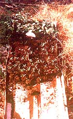
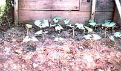

Do your thick spring sewings yield sparse rows? Try . . .
Last spring I decided to do something about the poor germination rate caused by our family garden's heavy clay soil. Double-seeding-the method we'd tried the previous year-had resulted in nothing better than small, tangled clumps of green alternating with long bare spots. I'd tried preplanting in flats, too . . . but had lost almost as many seedlings to transplant shock as I had to germination failure. And the tiny sprouts that did survive grew very slowly.
Of course, I'd heard about peat "starter pots" and decided to give them a try. My first thought was to simply go out and buy the things, but when it turned out that I'd need $24 worth to handle just one season's planting, I changed my mind in a hurry. Instead, I bought a single compressed peat pellet (for 8 cents) and took it home for careful examination.
After studying the commercially prepared seed-starter, I decided to try making my own. I had a good supply of loose peat moss, and simply mixed a bit of it in water until I'd produced a mash with the consistency of thick porridge. Then I shaped the material into pellets, making fat ones, thin ones, round ones, and square ones. After letting the little prototypes dry in the sun, I attempted to reconstitute them with water. However, the result was peat soup . . . obviously it was back to-the-shed time, to try again.
Before I could make another mistake, however, I remembered having once read an article that described a proven method of making compressed pellets, so I looked up the subject in MOTHER's trusty index and found that the four-page piece by John Funk had run in issue 9. John's method seemed to produce professional-looking peat pots, all right, but it involved using an automobile jack and cheesecloth . . . and I didn't want to go to the trouble of bagging and jack-pressing the moss (but I did like his idea for using recycled cans as compression cylinders or molds).
I had determined that our pots would need to be big enough to allow for at least two weeks' root growth, in order for the cold-framed plants to get off to a good start. And since there didn't seem to be any appropriately sized cans handy, I went to my shop . . . selected a block of oak . . . and turned a cylinder (with a 1-1/2" bore) on the lathe and a solid piston to match. Next, I stuffed the cylinder full of wet peat with my fingers, packed each load as tight as possible by hand, then pushed on the piston to eject the pellet. I soon found I could thrust a pencil into the center of the exposed peat while it was still in the press, thus making a hole for the seed.
Later, in the trial by immersion, the tiny receptacles held together well, so I went to work in earnest, and was soon able to produce about four pellets per minute. In less than two hours I'd made enough of the little peat pots to plant all our seeds. I didn't even bother to dry them out, but immediately planted one seed per pot. Then I put the pellets in a flat pan, covered each seed hole with loose dry peat, moistened its surface, and placed the pan in my cold frame.
Well, within three weeks, I was astonished to see that every seed had not only germinated, but also put out a strong root system. Better yet, not a single one wilted-even briefly-after being picked up and moved (pellet and all) to the vegetable patch, and none of the relocated seedlings succumbed to transplant shock.
As I said, I created my first press from a piece of oak, using a lathe . . . but there are other-and easier-ways to make similar devices. Before you build one, though, you'll have to decide how big your mold should be. My cylinder was 1" deep and 1-1/2" in diameter, but you might find that a different size will better suit the seeds you'll be planting. Once you've determined the dimensions, you can simply select a container or cylinder of the correct diameter. For example, a good press could consist of a piece of pipe, a small metal screw-top jar lid that fits inside, and a plunger made from a section of broomstick.
My own second peat compressor was constructed from a plastic container-which had held frozen orange juice-measuring 2-1/2" in diameter. I set aside its lid and cut around the container about an inch (you can choose any height you want the pellets to be) above the bottom. Next, I made a hole in the closed end of the can, large enough to accommodate a piece of 1/2" dowel about 4" long. Then I cut around the outside edge of the lid, trimming it until it could slide down inside the container, and punched a hole in its center. Finally, I drilled a small pilot hole in the end of the dowel and screwed the lid to the rod. (If the top isn't stiff enough, put two lids together for double thickness . . . or use a circle of wood or rigid metal.) I was then able to slide the free end of the dowel down through the 1/2" opening in the container's bottom. The result: an effective, easily made pellet producer!
In most areas a 2-cubic-foot bale of peat moss shouldn't cost more than $5.00 or so. Once you have it, moisten the moss with water and let it sit overnight (it should develop the consistency of a moist bread dough). One gallon of the mixture will be enough to make several hundred peat pots, so a bale should be good for thousands of plant starters.
Now, following the procedure I used, just pack your press-firmly-with the damp moss, make a seed hole with a stick, and push on the plunger until your disk clears the barrel of the press. Use a spatula to slide the pellet off the plunger, and place the little peat cakes on a board to dry if you intend to store them. On the other hand, should you be ready to start some seedlings, put the still-damp pellets in your flats and plant the seeds at once. Pretty soon they'll be sprouting leaves, standing up, and just begging to be set out in the ground. And before you know it, you'll be harvesting tasty vegetables . . . from dang near every seed you planted!
|
 A week after planting: healthy sprouts. |
Green beans just two hours after transplanting . . . there's not a trace of wilting! |
 |